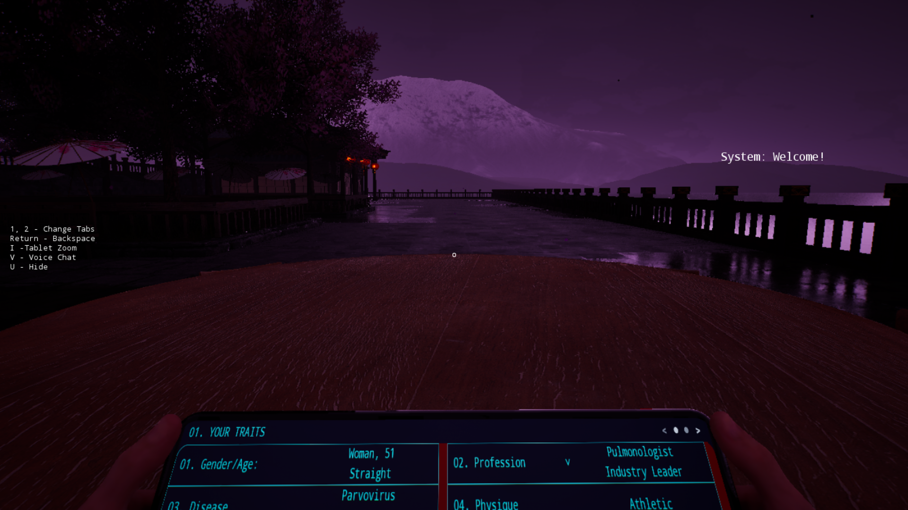
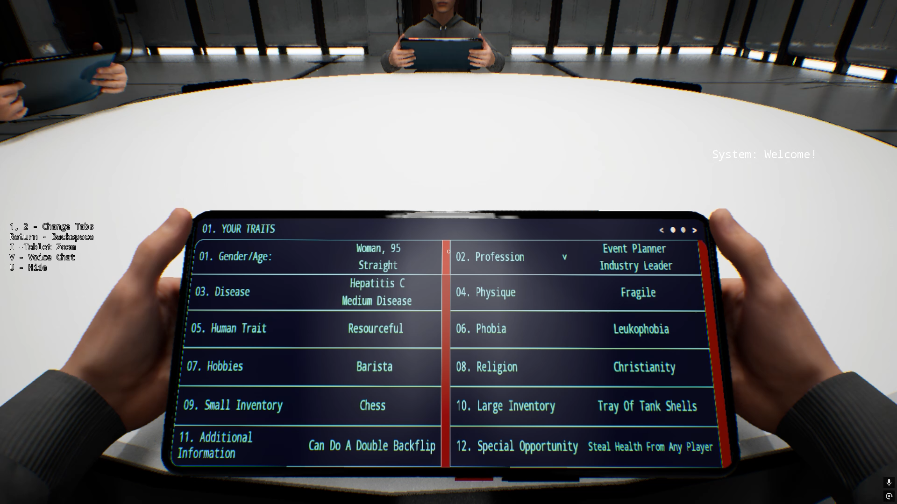
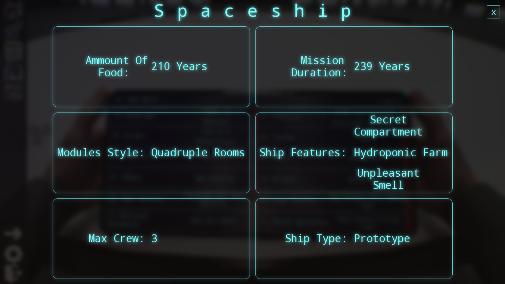
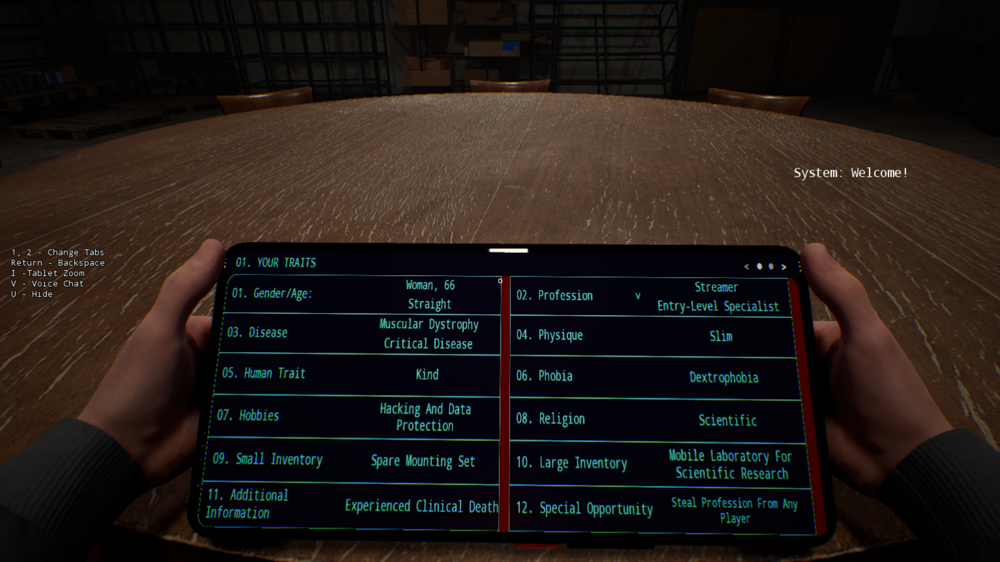
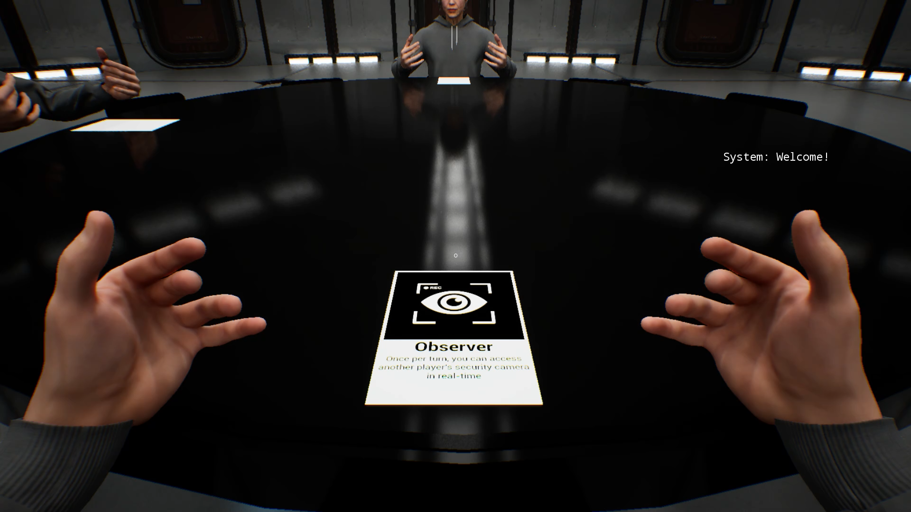
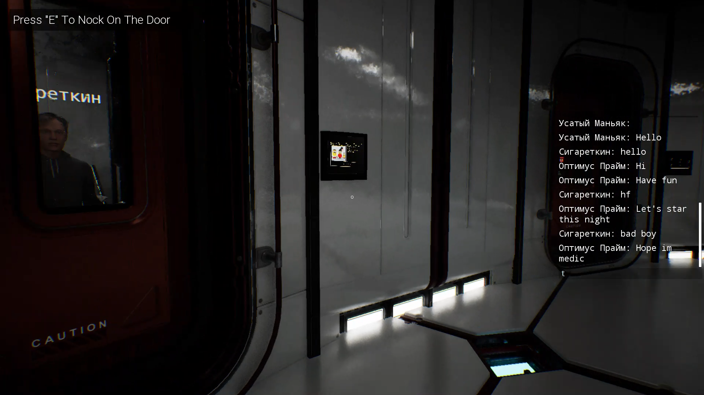
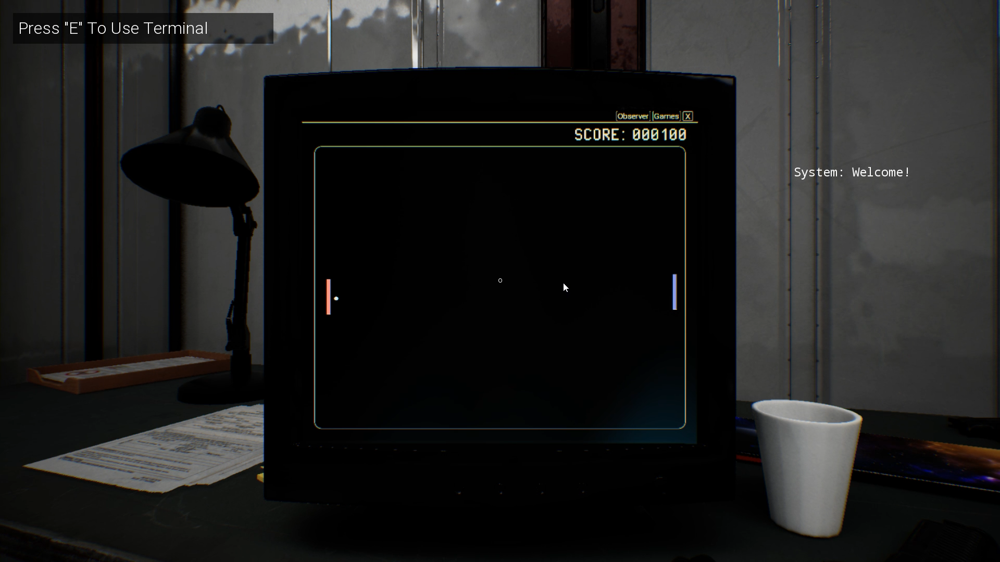
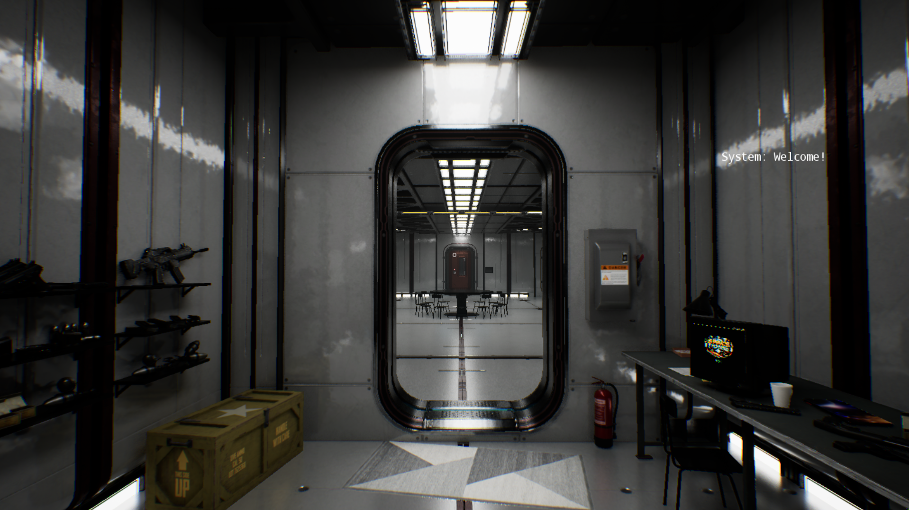

STAR RAKER
3D Bunker + Mafia in Space

3D Bunker + Mafia in Space
Game Objective
A crew of 4 to 16 players is trapped on a dying space station after a galactic cataclysm. Oxygen, food, and power are running out. Each round players must vote to eliminate someone to preserve resources — but only half the crew can survive until rescue arrives. One wrong vote, and the station explodes. The game ends when only as many players remain as there are functional escape pods.
Start of the Round
Each player receives unique character traits and a secret role. The round begins with the first player (the “captain”) revealing three traits and explaining why they should survive. They have 60 seconds. Turns proceed clockwise.
Discussion Phase
After everyone has spoken, a 2-minute open discussion begins. Players accuse, defend, lie or reveal information. No voting yet — pure psychology.
Voting Phase
Players vote in secret (60 seconds). The player with the most votes is eliminated (airlock). If there is a tie, a 30-second revote occurs — only tied players can be voted for. If the tie persists, all tied players are eliminated. Eliminated players can no longer speak or vote.
Catastrophes
Every 2–3 rounds a random catastrophe occurs (oxygen leak, hull breach, traitor sabotage, etc.). Players must quickly vote or act to survive the event, or lose additional lives/resources.
End of the Game
The game ends when the number of remaining players equals the number of available escape pods (usually half the starting crew). Survivors win. If the station explodes before that — everyone loses.




Game Objective
A crew of 4 to 16 players is on a long-haul spaceship. Among them are 2–4 impostors (traitors) whose goal is to eliminate the crew without being caught. The honest crew must identify and vote out all impostors before it’s too late. If all traitors are eliminated — crew wins. If traitors outnumber or eliminate the crew — traitors win.
Day Phase (Discussion & Voting)
All players discuss openly (2–3 minutes). Anyone can accuse, lie, defend. At the end of the phase, players vote to eliminate one suspect (60 seconds). The player with the most votes is ejected into space. Ties result in no elimination (or revote if you set that rule).
Night Phase (Impostor Actions)
Lights go out. Impostors secretly choose one crew member to kill (sabotage, vent attack, poison). They have 30 seconds to decide. Special roles may also activate (medic saves, detective investigates, etc.).
Special Roles & Abilities
- Impostor: kill, vent, sabotage systems
- Medic: protect one player from death (once per game or cooldown)
- Detective: check one player’s role each night
- Engineer: fix sabotages faster or see vents
- Traitor (hidden impostor among crew): pretends to be innocent
Custom roles can be added in lobby.
End of the Game
Crew wins if all impostors are eliminated.
Impostors win if they equal or outnumber the remaining crew, or if the ship is destroyed via sabotage.




Classic tabletop deduction meets 3D space horror — betrayal, survival, and chaos await.
Gather a big crew — support for up to 16 participants in real-time multiplayer. Perfect for Discord parties, streams and massive friend groups.
Every round in Ster Selection unleashes a new disaster. Vote to decide who lives and who dies. One wrong choice — game over.
In Star Betrayal one of your crew is the impostor. Lie, deceive, expose. Classic mafia tension — but in 3D space with vents and shadows.
Create your own roles with unique abilities. Design custom stations, disasters and events. Every game feels fresh and unpredictable.
Real-time voice chat with noise suppression. Scream, whisper, bluff — all in-game tension and chaos captured perfectly.
Every decision matters: trust or betray? Kill first or save? Branching outcomes and endings based on your actions and alliances.
Feel the tension of cosmic horror and deduction. Ready to betray or survive?
Real feedback from beta testers and early players
"Star Betrayal is pure chaos and I love it. The bluffing is next level — I betrayed my best friend and felt zero remorse. 10/10 would backstab again."

"Ster Selection is terrifying. The voting system is brutal — I got eliminated because of one bad trait reveal. The moral choices hit hard. Masterpiece."
"Finally a game where you can smell the betrayal through the screen. Voice chat + 16 players = instant classic. Can’t wait to host a SmackDown edition."

"Custom roles and maps make every session unique. Played 20 games already — still discovering new strategies. Best indie deduction game of 2026."

"The voice chat is insane. You can hear the panic when a catastrophe hits. I screamed so loud my neighbors knocked on the door. Worth every second."

"Moral choices actually matter here. I betrayed my alliance to save myself — and won. Felt guilty for days. That’s how you know the game is good."
Join the chaos now — play the demo for free or grab the full game with 50% discount.
Limited offer ends soon!